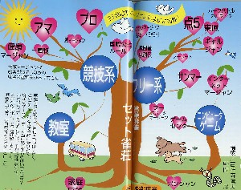
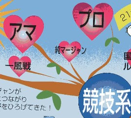

Pure Majan 純麻雀。
（９）麻雀進化の樹 .
以前、書壇57で紹介した麻雀四季報。その今月号(H16.9)に、麻雀進化の樹と
いう系統樹が載っていた。

フムフムと思いながら見ていたが、これがなかなかよくできている。たとえばいま話題になっている中国麻将。競技系とフリー系の間、それも競技系寄りの位置に図示されている。要するに競技麻雀でもなければフリー麻雀でもない。でもどちらか云えば競技系というわけだ。
で、最初のイラストの左上、競技系の方にプロとアマという二つの花が咲いている。これはたぶんアマ団体、プロ団体という意味と思われる。それはいいが、なんとその二つの花の中間に、純麻雀の花が咲いていた。(゜0゜)

それがまたプロでもなければアマでもないがアマ団体から枝分かれ、というなんとも絶妙な位置。(^-^；
麻雀四季報には特にPRをお願いしたわけではない。きっとHPをみてチェックしてくれたんだろう。当然ながら、花というよりまだつぼみ。そのうち大きな花にしたいな。